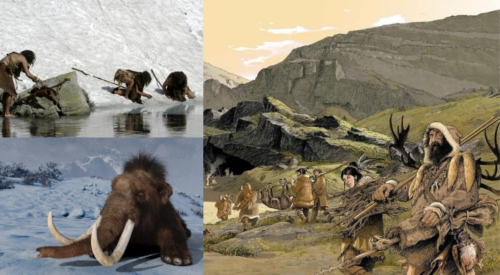

El Cuaternario es el tercer y último período y sistema del Cenozoico en la escala temporal geológica. Sucede al Neógeno, se inició hace 2,59 millones de años y llega hasta la actualidad. Hasta el año 2009, se consideraba que el Cuaternario comenzaba hace 1,81 millones de años, pero la Comisión Internacional de Estratigrafía le añadió la edad y piso Gelasiense, adelantando por tanto su comienzo. El Cuaternario se destina a cubrir el período reciente de ciclos de glaciaciones y, puesto que algunos episodios de enfriamiento y glaciación caen en el Gelasiano, esto justifica su traslado al Cuaternario.
Fue durante el Cuaternario cuando apareció el Homo sapiens sobre la Tierra. A su vez, se extinguieron grandes especies, tanto vegetales como animales, y fueron las aves y mamíferos los vertebrados que dominaron la Tierra. En síntesis, hubo un gran predominio de los mamíferos, una gran expansión del ser humano, y la presencia de una flora y una fauna muy parecida a la actual, por lo que también se han apuntado las migraciones de grandes mamíferos o el origen del hombre como posibles criterios. Por eso, a veces es denominado Antropozoico.